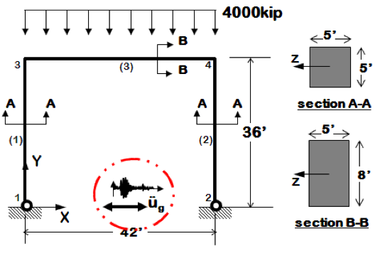
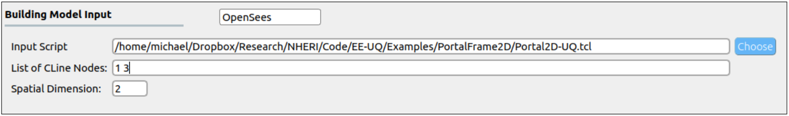
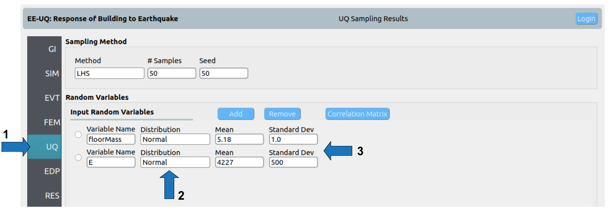

4.1. Earthquake Response of Portal Frame¶
In this example, a simple 2D portal frame model is used to verify the results of EE-UQ app. The model is a linear elastic single-bay, single-story model of a reinforced concrete portal frame, as shown in Fig. 4.1.2. The analysis of this model considers both gravity loading and lateral earthquake loading due to the El Centro earthquake (Borrego Mountain 04/09/68 0230, El Centro ARRAY 9, 270). The original model and ground motion used in this example were obtained from Example 1b on the OpenSees website, and were modified to scale the ground motion record from gravity units, g to the model units, \(\frac{in}{s^2}\). Files for this example are included with the release of the software and are available in the Examples folder in a subfolder called PortalFrame2D.
Fig. 4.1.2 Two-dimensional portal frame model subjected to gravity and earthquake loading.¶
To introduce uncertainty in the model, both mass and young’s modulus
are assumed to be normally distributed random variables with means and
standard deviation values shown in lblRV; In this
example, the model will be sampled with the Latin Hypercube sampling
method using both EE-UQ app and a Python script
(PortalFrameSampling.py) and response statistics from both
analyses are compared.
Uncertain Parameter |
Distribution |
Mean |
Standard Deviation |
|---|---|---|---|
Nodal Mass (m [kip]) |
Normal |
5.18 |
1.0 |
Young’s Modulus (E [ksi]) |
Normal |
4227.0 |
500.0 |
Modeling uncertainty using EE-UQ app can be done using the following steps:
Start EE-UQ app, click on the simulation tab (SIM) in the left bar to open a building simulation model. Click on choose button in the input script row:

Fig. 4.1.3 Choose building model¶
Choose the model file
Portal2D-UQ.tclfrom thePortalFrame2Dexample folder.In the list of Clines Nodes edit box, enter
1, 3. This indicates to EE-UQ app that nodes 1 and 3 are the nodes used to obtain EDPs at different floor levels (i.e. base and first floor).Fig. 4.1.4 Node selection.¶
Click on the event tab (EVT) in the left bar to open the earthquake event specification tab, select Multiple Existing for loading Type. Click on the add button to add an earthquake event. Then click on the choose button to select the event file.

Fig. 4.1.5 Work on EVT.¶
Choose the event file (
BM68elc.json) for the El Centro earthquake provided in the portal frame 2D example folder.Now select the random variables panel (RV) from the left bar, change the random variables types to normal and set the mean and standard deviation values of the floor mass and Young’s modulus. Notice that EE-UQ app has automatically detected parameters defined in the OpenSees tcl file using the
psetcommand and defined them as random variables.Fig. 4.1.6 Work on UQ tab¶
Now click on run, set the analysis parameters, working directory and applications directory and click submit to run the analysis.
If the run is successful the program will automatically open the results tab showing the summary of results (Fig. 4.1.7).

Fig. 4.1.7 Pop-up shown when clicking Run.¶
4.1.1. Verification Script¶
A verification script (Listing 1) for propagating the uncertainty was developed in Python and is included in the example folder. The script creates 1000 samples for both the Young’s modulus and mass values using Latin Hypercube sampling, then modifies the OpenSees model, runs it and stores the output. After all the model samples are processed, the script will compute and output the mean and standard deviation values of the peak floor acceleration and peak drift.
import numpy as np
import os
import shutil
import subprocess
from pyDOE import *
from scipy.stats.distributions import norm
#Setting number of samples
nSamples = 1000
#Creating latin hyper cube designs
design = lhs(2, samples=nSamples)
#Sampling Young's Modulus and Mass
ESamples = norm(loc=4227, scale=500.0).ppf(design[:,0])
mSamples = norm(loc=5.18, scale=1.0).ppf(design[:,1])
#Initializing output arrays
PFA = []
PID = []
#Reading OpenSees Model
with open ("Ex1b.Portal2D.EQ.tcl", "r") as portalFrameFile:
portalFrameModel = portalFrameFile.read()
#Looping through the samples and creating modified models
for i in range(nSamples):
sampleName = str(i+1)
if(os.path.exists(sampleName) and os.path.isdir(sampleName)):
shutil.rmtree(sampleName)
os.mkdir(sampleName)
shutil.copy('BM68elc.acc', sampleName)
#Modifying the model using sample E and m values
with open (sampleName + '/Ex1b.Portal2D.EQ.tcl' , "w+") as modifiedFile:
modifiedModel = portalFrameModel.replace('pset floorMass 5.18', 'pset floorMass ' + str(mSamples[i]))
modifiedModel = modifiedModel.replace('pset E 4227', 'pset E ' + str(ESamples[i]))
modifiedFile.write(modifiedModel)
#Running OpenSees
subprocess.Popen("OpenSees Ex1b.Portal2D.EQ.tcl", shell=True, cwd=sampleName).wait()
#Reading Peak Floor Acceleration
with open (sampleName + '/PFA.out' , "r") as pfaFile:
PFA.append(float(pfaFile.readlines()[2]))
#Reading Peak Floor Acceleration
with open (sampleName + '/PID.out' , "r") as pidFile:
PID.append(float(pidFile.readlines()[2]))
#Cleaning up
shutil.rmtree(sampleName)
#Printing results
print 'Mean Peak Floor Acceleration: ', np.mean(PFA)
print 'Peak Floor Acceleration Std. Dev: ', np.std(PFA)
print 'Mean Peak Drift: ', np.mean(PID)
print 'Peak Drift Std. Dev.: ', np.std(PID)
4.1.2. Verification of Results¶
This section verifies the results produced for the portal frame by EE-UQ app against the results of running the same problem using the Python script. Running the uncertainty quantification problem locally using EE-UQ and using the Python script produces the results shown in figures below. The results (mean and standard deviation values of EDPs) for both are compared in the table below and, as seen, are in good agreement.
Fig. 4.1.2.1 Outputs from EE-UQ¶
Fig. 4.1.2.2 Outputs from PortalFrameSampling.py script¶
Engineering Demand Parameter |
EE-UQ |
Python |
%Diff |
|
Peak Floor Acceleration
(in/s^2)
|
Mean
Std Dev
|
68.0836
12.6956
|
67.5449
12.5487
|
0.79
1.17
|
Peak Story Drift
(x10-3 in)
|
Mean
Std Dev
|
1.3649
0.3017
|
1.3470
0.2955
|
1.32
2.10
|